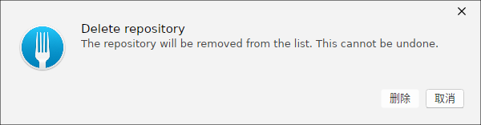
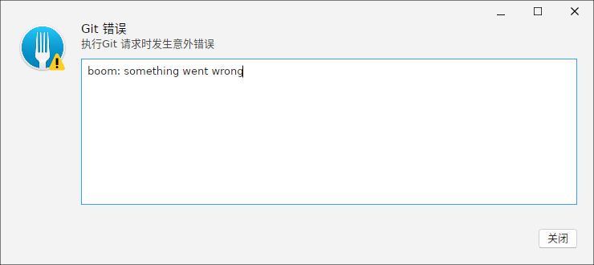
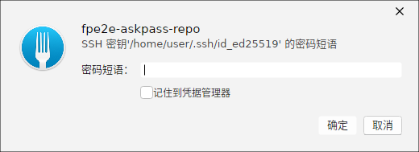
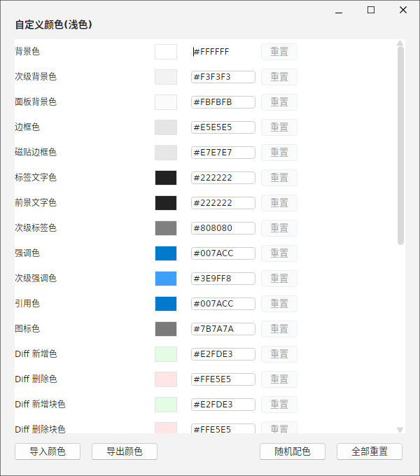
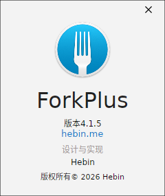
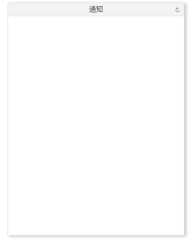

本章汇总 ForkPlus 中可复用的「通用对话框与工具」，它们贯穿于各功能模块：消息框、错误窗、AskPass 密码短语输入、自定义颜色、关于窗口与通知中心。
消息框（Message Box）
用于确认破坏性操作。以删除仓库为例，消息框同时给出标题「Delete repository」、说明「The repository will be removed from the list. This cannot be undone.」，并提供「删除 / 取消」两个按钮。此类弹窗强调操作的不可撤销性，需用户主动确认后才执行。

错误窗（Error Window）
当执行 Git 请求遇到意外错误时，ForkPlus 弹出「Git 错误」错误窗。窗口以警示图标提示「执行 Git 请求时发生意外错误」，并在下方蓝色框内展示底层错误详情文本。点击「关闭」结束；该窗口通常由全应用统一错误处理捕获并抛出。

AskPass：SSH 密码短语输入
push / pull 等需要解锁 SSH 密钥时，ForkPlus 弹出 AskPass 对话框要求输入密码短语（Passphrase）。窗口标明是哪把密钥（如 SSH 密钥 '/home/user/.ssh/id_ed25519'），提供：
- 密码短语输入框（掩码输入）；
- 「记住到凭据管理器」复选框：勾选后下次不再询问；
- 确定 / 取消按钮。

id_ed25519 输入密码短语，可选「记住到凭据管理器」自定义颜色（Custom Colors）
「自定义颜色（浅色）」窗口以语义化颜色令牌的形式精细定制界面配色，每行含：颜色名称、预览色块、十六进制值与「重置」按钮。涵盖背景/面板、文本层级、强调色，以及 Diff 新增/删除等专门令牌。底部提供批量工具：
- 导入颜色 / 导出颜色：分享或复用自己的配色方案；
- 随机配色：一键生成一套随机配色用于探索；
- 全部重置：回到默认色板。

关于窗口（About）
「关于」窗口展示应用标识信息：ForkPlus 图标、产品名、版本号（v4.1.5）、官网（hebin.me）、设计与实现者，以及版权信息。用于快速确认版本与出处。

通知中心（Notification Center）
「通知」面板集中展示应用产生的通知消息。面板顶部为标题栏（含设置/刷新图标），下方为通知内容区。无通知时显示空白净面板；有通知时在此按时间汇总，便于统一查看后台任务（拉取、推送、AI 等）的结果。
